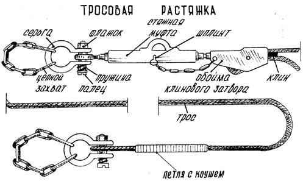

2. Maşyny ýüklemäge taýýarlamak
3. Tigirli maşyny açyk wagonda ýerleşdirmegiň we berkitmegiň tertibi
Iki oklyk maşynlary berkitmegiň usuly
Üç oklyk maşynlary berkitmegiň usuly
Dört oklyk maşynlary berkitmegiň usuly
Iki we üç oklyk maşynlary sepleşigiň üstünde berkitmegiň usullary
4. Ýüklenen maşynlary daşamaga taýýarlamak
Ikinji usul boýunça agramy 24 tonna çenli tehnika dört sim (tabel) çekmesi bilen, agramy 24,1-den 40 tonna çenli bolanlary bolsa sekiz çekme bilen berkidilýär.
Sim çekme (daňy, gurşaw daňysy) - bu aşakdaky suratda görkezilişi ýaly, wagonyň we maşynyň daňy enjamlaryny, şeýle hem maşynlary biri-biri bilen birleşdirýän berk dartylan, towlanan sim sapaklarydyr. Çekmeler maşynlarda çekiş çeňňeklerine ýa-da halkalaryna, mostlara, çarçuwalara we berkidilmegiň berkligini üpjün edýän hem-de çekmeler bilen zeperlendirilip bilinmeýän ýa-da olaryň kesilmegine getirip bilmeýän beýleki böleklere berkidilýär.
Wagonlaryň sepleşiginiň üstünde goýlan tigirli maşynlarda çekmeler yzdaky ýa-da yzdaky we ortaky mostlara berkidilýär.
Maşynlaryň agramyna we olaryň gurluş aýratynlyklaryna baglylykda tigirler dört ýa-da sekiz direg agaç dörtgyraň bölegi bilen gysdyrylýar, olar uzyn tarapy bilen açyk wagona kese düşelýär we tigirleriň aşagyna berk gabat getirilýär.
Tabel çekmeleri (mehanizirlenen stroplar) trosly we zynjyrly bolup biler, olar aşakdaky suratda görkezilen.

Tabel çekmesi dartyjy enjam (talrep) we wagonyň hem-de maşynyň daňy enjamlaryna berkidilýän iki bogun bilen üpjün edilen zynjyr ýa-da trosdyr.
Aşakdaky suratda görkezilen direg dörtgyraň agaç bölekleri (ýarym tegelek agaç, odun böleginiň dörtden biri, şpal kesindileri we ş.m.) tigirli maşynlaryň açyk wagonlaryň ugry boýunça süýşmegine päsgel berýär.

Surat. Direg dörtgyraň agaç bölekleri
Dörtgyraň agaç bölekleriniň tigriň diametrine baglylykda bellenilýän ölçegleri aşakdaky tablisalarda görkezilen.
|
Dörtgyraň agaç bölegiň ölçegleri mm (azyndan) |
Tigriň diametri, mm |
|||||
|
500-den az |
500-799 |
800-1099 |
1100-1399 |
1400-1599 |
1600 we ondan köp |
|
|
beýikligi |
40 |
50 |
75 |
100 |
135 |
150 |
|
ini |
100 |
100 |
120 |
160 |
200 |
220 |
|
|
|
|
|
|
|
|
Dörtgyraň agaç bölegiň uzynlygy, ol uzyn tarapy bilen tigre degip duran halatynda, tigriň ininden birneme uly bolmalydyr (goşa tigirlerde iki tigriň ininden uly).
Tigirli maşynlary berkitmek üçin beýikligi boýunça iki bölekden düzülen gönüburçly kesimli direg dörtgyraň agaç bölekleri ulanmaga rugsat berilýär.
Gapdal dörtgyraň agaç bölekleri skobalar bilen bir hatarda tigirli maşynlary berkitmegiň käbir usullarynda, açyk wagonlaryň bortlary ýapylyp bilinmedik halatynda, şeýle hem olar açyk wagonlaryň sepleşiginiň üstünde ýerleşdirilende kese süýşmä päsgel berýär.
Adatça, tigirli maşynlar bortlary ýapylan açyk wagonlarda daşalýar. Eger maşynlaryň gurluş aýratynlyklary boýunça açyk wagonyň gapdal bortlary ýapylyp bilinmese, onda her bir tigirli maşyn kese süýşmeginden goşmaça gapdal dörtgyraň agaç bölekleri bilen berkidilýär, olar ähli tigirleriň daşky (içki) tarapyndan açyk wagonyň düşegine çüýlenýär. Her bir dörtgyraň agaç bölek tigirli maşynyň agramy 12 tonna çenli bolanda diametri 6 mm, uzynlygy 200 mm bolan dört çüý bilen, maşynyň agramy 12-den 40 tonna çenli bolanda sekiz çüý bilen çüýlenýär.
Direg dörtgyraň agaç bölekleri çüýlenýän çüýleriň sany, çekmeleriň sany we olardaky sim sapaklarynyň sany aşakdaky tablisa boýunça kesgitlenilýär.
Tablisa
|
Tehnikanyň bir biriniginiň agramy, t |
Çüýler bilen berkidilende |
Skobalar bilen berkidilende |
|
|
Sapaklaryň sany diametri bolan simiň çekmede 6 mm |
Çüýleriň sany bir direg dörtgyraň agaç bölegine |
Sapaklaryň sany diametri bolan simiň çekmede 6 mm |
|
|
3 çenli goşmak bilen |
2 |
4/2* |
2 |
|
≥ 3,1-den 6,0 çenli goşmak bilen |
4 |
8/4 |
4 |
|
≥ 6,1-den 9,0 çenli goşmak bilen |
4 |
16/8 |
4 |
|
≥ 9,1-den 12,0 çenli goşmak bilen |
6 |
-/10 |
6 |
|
≥ 12,1-den 15,0 çenli goşmak bilen |
8 |
-/12 |
6 |
Eger tablisa boýunça bir direg dörtgyraň agaç bölegine 12 we ondan köp çüý kakmak zerur bolup çyksa, onda dört dörtgyraň agaç bölegiň ýerine sekiz dörtgyraň agaç bölegi ulanmak maksadalaýykdyr.
2. Maşyny ýüklemäge taýýarlamak
Tigirli maşyny açyk wagonda berkitmek üçin ýüklemezden öň şular zerurdyr:
— hapadan, gyşyna bolsa gardan we buzdan gowy arassalamaly;
— tormoz ulgamynyň sazlygyny barlamaly;
— ulanyş boýunça gollanma laýyklykda demir ýol boýunça daşamak üçin ýagdaýa getirmeli.
3. Tigirli maşyny açyk wagonda ýerleşdirmegiň we berkitmegiň tertibi
Agramy 24 tonna çenli iki oklyk maşynlaryň tigirleri daşky (içki) taraplaryndan dört direg dörtgyraň agaç bölegi bilen gysdyrylýar we dört sim (tabel) çekmesi bilen berkidilýär.

Surat. Iki oklyk awtoulaglary agaç direg dörtgyraň agaç bölekleri we sim (tabel) çekmeleri bilen berkitmek.
Üç oklyk maşynlarda öňdäki mostuň tigirleri iki tarapdan hem dörtgyraň agaç bölekleri bilen gysdyrylýar, ortaky we yzdaky mostlaryň tigirleri bolsa daşky taraplaryndan gysdyrylýar.
Agramy 24 tonna çenli üç oklyk maşynlar dört sim (tabel) çekmesi bilen, agramy 24,1-den 40 tonna çenli bolanlary bolsa sekiz çekme bilen berkidilýär.
Surat. Üç oklyk awtoulaglary agaç direg dörtgyraň agaç bölekleri we sim (tabel) çekmeleri bilen berkitmek.
Dört oklyk maşynlar direg dörtgyraň agaç bölekleri bilen berkidilende ähli mostlaryň tigirleri gysdyrylýar.
Agramy 24 tonna çenli dört oklyk maşynlar dört sim (tabel) çekmesi bilen, agramy 24,1-den 40 tonna çenlileri bolsa sekiz çekme bilen berkidilýär, bu aşakdaky suratda görkezilen.
Surat. Dört oklyk awtoulaglary agaç direg dörtgyraň agaç bölekleri we sim (tabel) çekmeleri bilen berkitmek.
Maşynlar açyk wagonlaryň sepleşiginiň üstünde ýerleşdirilende iki oklyk maşynlarda yzdaky mostuň tigirleri iki tarapdan hem direg dörtgyraň agaç bölekleri bilen gysdyrylýar, üç oklyk maşynlarda bolsa ortaky we yzdaky mostlaryň tigirleri daşky taraplaryndan gysdyrylýar.
Öňdäki mostuň tigirlerine parallel ýagdaýda daşky (içki) taraplaryndan daşlyklaryň gapdal ýüzünden 20 – 30 mm aralykda uzaboýuna ugrukdyryjy dörtgyraň agaç bölekleri düşelýär, olaryň her biri maşynyň agramy 12 tonna çenli bolanda diametri 6 mm we uzynlygy 200 mm bolan dört çüý bilen, agramy köp bolanda alty çüý bilen çüýlenýär.
Maşynlar wagonlaryň sepleşiginiň üstünde dört sim (tabel) çekmesi bilen berkidilýär, bu aşakdaky suratda görkezilen.

Surat. Açyk wagonlaryň sepleşiginiň üstünde ýerleşen iki we üç oklyk awtoulaglary çekmeleriň, direg we uzaboýuna ugrukdyryjy dörtgyraň agaç bölekleriniň kömegi bilen berkitmek: a – iki oklyk awtoulag; b – üç oklyk awtoulag; 1 – çekme; 2 – direg dörtgyraň agaç bölegi; 3 – uzaboýuna ugrukdyryjy dörtgyraň agaç bölegi
4. Ýüklenen maşynlary daşamaga taýýarlamak
Harby tehnika demir ýol hereket edýän düzüminde ýerleşdirilenden soň şular zerurdyr:
- harby tehnikany mümkin bolan uzaboýuna we kese süýşmelerden berkitmeli;
- duralga tormozlaryny, pes geçirişi işletmeli;
- wagonlaryň sepleşiginiň üstünde goýlan awtoulaglarda öňdäki hereketlendiriji mosty öçürmeli;
- ýüklenen harby tehnikanyň, aýrylýan enjamlaryň (ot söndürijileriň, pilleriň, merdiwanlaryň we ş.m.) hem-de ätiýaçlyk tigirleriň berkidilişini barlamaly;
- saklaýjylar we berkidijiler sazsyz bolan halatynda harby tehnikanyň ähli aýlanýan, çykyp duran bölekleri ýöriş ýagdaýynda sim çekmeler bilen berkidilmelidir;
- harby tehnikanyň ýagdaýynyň ýüklemegiň gabarasyna ýa-da gabaradan daşary ýükleri daşamaga bolan talaplara laýyk gelýändigini barlamaly;
- aýnalary öňünden galdyryp, lýuklary, kabinalaryň gapylaryny ýapmaly we möhürlemeli;
- sowuk döwürde sowadyş ulgamyndan suwy boşatmaly;
- açyk wagonlaryň bortlaryny ýapmaly we gulplar bilen berkitmeli; tehnikanyň ini açyk wagonlaryň gapdal bortlaryny ýapmaga mümkinçilik bermeýän halatlarda olary açyk (aşak goýberilen) ýagdaýda berkitmeli (demir bortlary uzaboýuna balkalardaky halkalara berkitmeli, halkalar bolmadyk halatynda bolsa — sim bilen daňmaly);
- ýüklenen harby tehnikanyň maskirowkasyny geçirmeli (zerur bolan halatynda).
Birinji we ikinji usullar harby eşelonlaryň we transportlaryň düzüminde aýry-aýry birlikleriniň agramy 40 tonna çenli bolan tigirli maşynlar daşalanda, saz tormoz ulgamy bolan halatynda ulanylýar, mundan başga-da ikinji usul tormoz ulgamy bolmadyk agramy 10 tonna çenli maşynlary berkitmek üçin ulanylýar.